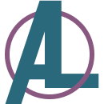

<nav class="navbar navbar-expand-lg navbar-light bg-light fixed-top navigation">
    <div class="container-fluid">
        <a class="navbar-brand" href="#">
          
          Amanda Lim: UX Designer
        </a>
      <button class="navbar-toggler" type="button" data-bs-toggle="collapse" data-bs-target="#navbarNav" aria-controls="navbarNav" aria-expanded="false" aria-label="Toggle navigation">
        <span class="navbar-toggler-icon"></span>
      </button>
      <div class="collapse navbar-collapse" id="navbarNav">
        <ul class="navbar-nav ms-auto">
          <li class="nav-item">
            <a class="nav-link active" aria-current="page" href="./index.html">HOME</a>
          </li>
          <li class="nav-item">
            <a class="nav-link" href="#">ABOUT</a>
          </li>
          <li class="nav-item">
            <a class="nav-link" href="./case_studies.html">WORK</a>
          </li>
          <li class="nav-item">
            <a class="nav-link" href="#">CONTACT</a>
          </li>        <li class="nav-item">
            <a class="nav-link" href="./IMAGES/Lim Resume v5 2021.pdf">RESUME</a>
          </li>
        </ul>
      </div>
    </div>
  </nav>